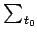
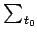
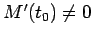
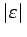

Inhalt Index DeskTop Bronstein

 Dynamische Systeme und Chaos Bifurkationstheorie, Wege zum Chaos Übergänge zum Chaos Globale homokline Bifurkationen
Dynamische Systeme und Chaos Bifurkationstheorie, Wege zum Chaos Übergänge zum Chaos Globale homokline Bifurkationen


Gegeben sei die ebene Differentialgleichung
wobei ein kleiner Parameter ist. Für  sei (17.39) ein HAMILTON-System, d.h. für f=(f1,f2) gelte und , wobei eine C3-Funktion sei. Das zeitabhängige Vektorfeld sei zweimal stetig differenzierbar und T-periodisch bezüglich des ersten Arguments. Außerdem seien f und g beschränkt auf beschränkten Mengen. Bei
sei (17.39) ein HAMILTON-System, d.h. für f=(f1,f2) gelte und , wobei eine C3-Funktion sei. Das zeitabhängige Vektorfeld sei zweimal stetig differenzierbar und T-periodisch bezüglich des ersten Arguments. Außerdem seien f und g beschränkt auf beschränkten Mengen. Bei  existiere in (17.39) ein homokliner Orbit bezüglich des Sattelpunktes
existiere in (17.39) ein homokliner Orbit bezüglich des Sattelpunktes  . Der POINCARÉ-Schnitt  von (17.39) im Phasenraum {(x1,x2,t)} bei t=t0 sehe aus wie in der folgenden Abbildung.
. Der POINCARÉ-Schnitt  von (17.39) im Phasenraum {(x1,x2,t)} bei t=t0 sehe aus wie in der folgenden Abbildung.
Die POINCARÉ-Abbildung hat für kleine  einen Sattel nahe x = 0 mit den invarianten Mannigfaltigkeiten und . Ist der homokline Orbit des ungestörten Systems durch gegeben, so läßt sich der Abstand der Mannigfaltigkeiten und , gemessen entlang der Geraden, die durch verläuft und senkrecht auf steht, durch die Formel
einen Sattel nahe x = 0 mit den invarianten Mannigfaltigkeiten und . Ist der homokline Orbit des ungestörten Systems durch gegeben, so läßt sich der Abstand der Mannigfaltigkeiten und , gemessen entlang der Geraden, die durch verläuft und senkrecht auf steht, durch die Formel
| (17.84a) |
berechnen. Dabei ist die MELNIKOV-Funktion, die durch
 |
(17.84b) |
definiert ist. Für a = (a1,a2) und b = (b1,b2) ist . Besitzt die MELNIKOV-Funktion M in t0 eine einfache Nullstelle, d.h., gilt M(t0) = 0 und , dann schneiden sich die Mannigfaltigkeiten und für genügend kleine  transversal. Wenn M keine Nullstellen besitzt, gilt , d.h., es gibt keine homoklinen Punkte.
transversal. Wenn M keine Nullstellen besitzt, gilt , d.h., es gibt keine homoklinen Punkte.
Bemerkung: Das ungestörte System (17.39) besitze einen heteroklinen Orbit, gegeben durch , der aus einem Sattel 01 in einen Sattel 02 läuft. Seien und die Sattel der POINCARE-Abbildung für kleine . Besitzt  , berechnet wie oben, in t0 eine einfache Nullstelle, so schneiden sich und für kleine
, berechnet wie oben, in t0 eine einfache Nullstelle, so schneiden sich und für kleine  transversal.
transversal.
| Beispiel |
|
Betrachtet wird die periodisch gestörte Pendelgleichung , d.h. das System   |